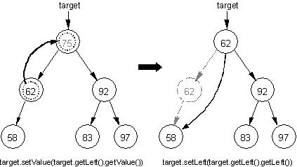
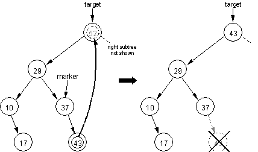
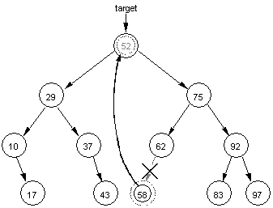

| | |
| deleteTargetNode Method | page 3 of 5 |
The deleteHelper method finds the node to be deleted and calls removeTargetNode, passing a reference to the TreeNode target as shown in the following method.
private TreeNode deleteTargetNode(TreeNode target)
// pre : target points to node to be deleted
// post: target node is deleted preserving binary search tree property
{
if (target.getRight() == null)
{
return target.getLeft();
}
else if (target.getLeft() == null)
{
return target.getRight();
}
else if (target.getLeft().getRight() == null)
{
target.setValue(target.getLeft().getValue());
target.setLeft(target.getLeft().getLeft());
return target;
}
else // left child has right child
{
TreeNode marker = target.getLeft();
while (marker.getRight().getRight() != null)
marker = marker.getRight();
target.setValue(marker.getRight().getValue());
marker.setRight(marker.getRight().getLeft());
return target;
}
}
The algorithm for deletion employed in the deleteTargetNode method is:
Node to be deleted is a leaf. Make the link from the parent null.
Node to be deleted has no left (or right) subtree (one child). Make the link from the parent refer to the left (or right) subtree.
Node to be deleted has non-empty left and right subtrees (two children). Change the node value to the largest value in the left subtree, and then delete the largest value from the left subtree. (The deletion of the largest value must be either case a or b above.)
The leaf and one child cases are handled in deleteTargetNode as follows:
...
if (target.getRight() == null)
{
return target.getLeft();
}
else if (target.getLeft() == null)
{
return target.getRight();
}
...
These cases are left for you and your instructor to trace.
The two-child case is more difficult and involves changing the node value to the largest value in the left subtree, then deleting the largest value from the left subtree. The rightmost node will be the node with the greatest value in the left subtree.
Working with a smaller version of the same binary tree in Diagram 36-1. Suppose in the following diagram we wish to delete the node with value 75

Diagram 36-2
Working with a smaller version of the same binary tree in Diagram 36-1. Here are the steps for deleting a node having two children in which the left child has no right.
Copy the contents of the left child of target and set it as the current value.
target.setValue(target.getLeft().getValue());
As show in the diagram above, the value 75 is replace with 62.
Reattach the left subtree to maintain an ordered tree. The left subtree of the node reference by target will now point to the node containing the value 58.
target.setLeft(target.getLeft().getLeft());
As show in the Diagram 36-2 above, since the node that originally contained the value 62 is no longer referenced, it is removed (garbage collected).

Diagram 36-3
Working with the right subtree of our original binary tree (see Diagram 36-1). Here are the steps for deleting a node containing the value 52. In this case the node has two children and the left child has a right child.
Position marker to access the node with the largest value in the left subtree. This is the rightmost node in the left subtree.
TreeNode marker = target.getLeft();
while (marker.getRight().getRight() != null)
marker = marker.getRight();
As show in the diagram above, marker now references the node pointing to the node with largest value in the left subtree (43).
Copy the contents of the right child of marker and set it as the current value.
target.setValue(marker.getRight().getValue());
As show in the diagram above, the value 52 is replaced with 43.
Delete the largest value from the right subtree. Reattach the right subtree to maintain an ordered tree.
marker.setRight(marker.getRight().getLeft());
As show in the Diagram 36-3 above, the node containing the value 43 is no longer referenced.

Diagram 36-4
This entire process for the two-child case could be directed the other way. Again, suppose the node with value 52 is to be deleted from the original tree. Referring to Diagram 36-4 above, the steps would be:
Access the node with the smallest value in the right subtree. This is the leftmost node in the right subtree.
Copy the contents (58) and set it as the current value.
Delete the smallest value from the left subtree. Reattach the left subtree to maintain an ordered tree.
|